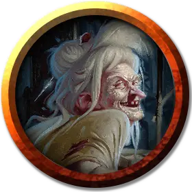

Морганта
Morgantha
Среднее Исчадие, нейтрально-злое, именной НИП

Класс Доспеха 17 (природный доспех)
Хиты 112 (15к8 + 45)
Скорость 30 футов
| мод | спас | ||
|---|---|---|---|
| СИЛ | 18 | +4 | +4 |
| ЛОВ | 15 | +2 | +2 |
| ТЕЛ | 16 | +3 | +3 |
| мод | спас | ||
|---|---|---|---|
| ИНТ | 16 | +3 | +3 |
| МДР | 14 | +2 | +2 |
| ХАР | 16 | +3 | +3 |
Навыки Восприятие +6, Обман +7, Проницательность +6, Скрытность +6
Сопротивление урону огонь, холод; дробящий, колющий, рубящий
Иммунитет к состояниям очарование
Чувства тёмное зрение 120 футов, пассивное Восприятие 16
Языки Общий, Бездны, Инфернальный, Первичный
Опасность 5 (1800 опыта)
Бонус мастерства +3
Особенности
Врождённое колдовство. Базовой характеристикой карги является Харизма (Сл спасброска от заклинания 14, +6 к попаданию атаками заклинаниями). Морганта может накладывать следующие заклинания, не нуждаясь в материальных компонентах:
• Неограниченно: волшебная стрела [magic missile], обнаружение магии [detect magic]
• 2/день каждое: луч слабости [ray of enfeeblement], усыпление [sleep], уход в иной мир [plane shift] (только на себя)
Сопротивление магии. Морганта совершает с преимуществом спасброски от заклинаний и прочих магических эффектов.
Предметы ночной карги. Морганта носит с собой два очень редких магических предмета, созданных для себя. Если они потеряются, она пойдет на многое, чтобы вернуть их, потому что создание новых требует много времени и сил..
Каменное сердце. Этот блестящий чёрный камень позволяет Морганте становиться бестелесной. Прикосновение к нему также лечит все болезни. Создание занимает 30 дней.
Сумка душ. Если существо умирает от воздействия Ночных кошмаров, Морганта ловит его душу в чёрный мешок, сшитый из плоти. Сумка вмещает только одну злую душу, и только та карга, что создала его, может ей пользоваться. Создание сумки душ занимает 7 дней и требует приношения в жертву Гуманоида (из плоти которого и делается сумка).
Действия
Когти (только в форме карги). Рукопашная атака оружием: +7 к попаданию, досягаемость 5 футов, одна цель. Попадание: Рубящий урон 13 (2к8 + 4).
Смена формы. Морганта магическим образом превращается в гуманоидную женщину Маленького или Среднего размера, либо же принимает свой истинный облик. Ее статистика одинакова во всех обликах. Все снаряжение, которое она несет и носит, не превращается. Она принимает истинный облик, когда умирает.
Эфирность. Морганта магическим образом переходит на Эфирный План с Материального Плана, или наоборот. Для этого у Морганты должно быть каменное сердце.
Ночные кошмары (1/день). Находясь на Эфирном Плане, Морганта магическим образом касается спящего на Материальном Плане Гуманоида. Заклинание защита от зла и добра [protection from evil and good], наложенное на цель, предотвращает этот контакт, равно как и магический круг [magic circle]. Пока контакт поддерживается, цель переживает ужасные видения. Если эти видения длятся как минимум 1 час, цель не получает преимущества от отдыха, и максимум её хитов уменьшается на 5 (1к10). Если этот эффект опускает максимум хитов до 0, цель умирает, и если цель была злой, её душа захватывается сумкой душ. Уменьшение максимума хитов длится до тех пор, пока не будет устранено заклинанием высшее восстановление [greater restoration] или подобной магией.
Описание
Осунувшаяся, грузная старая женщина с лицом, сморщенным как печёное яблоко, подметает пол, перекатывая несколько старых костей и поднимая облака белой пыли своей метлой. На ней испачканный кровью и мукой фартук. Длинное, острое шило держит её собранные в клубок седые волосы.
Старая женщина – это Морганта. Она не против посетителей, если они прибыли вести дела. Она пытается продать последнюю партию своего сонного печенья по 1 зм за каждое. Она с гордостью отзывается о своей выпечке, утверждая, что использует только лучшие ингредиенты. Если персонажи выглядят незаинтересованными её товаром, она кричит «Проваливайте!». Если они нападают или отступают, чтобы сбежать, она зовёт своих дочерей и вступает в бой.
Карга управляется с жерновом вручную, ведь лопасти ветряной мельницы более не улавливают ветер.
Хитрые и разрушительные ночные карги любят поворачивать помыслы во зло: любовь в одержимость, доброту в ненависть, преданность в пренебрежение, щедрость в эгоизм. Ночные карги испытывают извращенную радость, развращая смертных.
Ночные карги когда-то были существами Страны Фей, но за испорченность их давным-давно изгнали в Гадес, где они превратились в исчадий. Ночные карги уже давно распространились по всем Нижним Планам.
Торговцы душами. Пока человек спит, ночная карга может, находясь на Эфирном Плане, вторгнуться в его сны. Существо с истинным зрением увидит призрачный облик карги, сидящей на жертве. Карга наполняет разум жертвы сомнениями и страхами, надеясь подвигнуть её на злые поступки. Она не окончит свои ночные бдения, пока жертва не издохнет во сне. Если карге удалось побудить жертву совершить темное деяние, она ловит её искалеченную душу в сумку душ (смотрите врезку «предметы ночной карги») и уносит её в Гадес.
Шабаш. Ночная карга, состоящая в шабаше (смотрите врезку «шабаш карг»), имеет показатель опасности 7 (2900 опыта).
См. дополнительно статью: "Бестиарий: Карги"